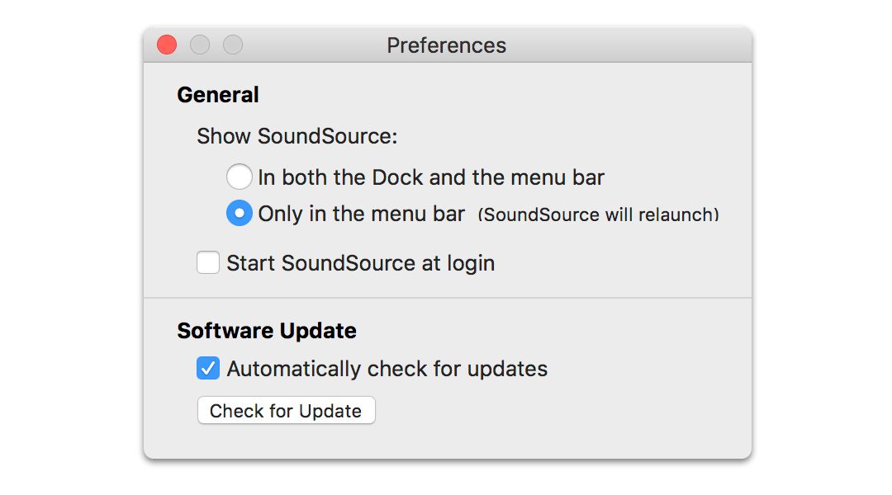

Preferences

SoundSource's Preferences window
SoundSource's preferences can be accessed from the SoundSource menu, as well as from SoundSource's menu bar icon.
General
Show SoundSource: This toggle determines how SoundSource's interface appears. By default, SoundSource will appear in both the Dock and in the menu bar in the upper right of your screen. Here, you can instead set SoundSource to appear only in the menu bar.
Start SoundSource at login: Turn this option on to have SoundSource run automatically when you login to your computer, so it's always available.
Software Update
Automatically check for software updates: With this option activated, SoundSource compares itself to the most current version available from our server and alerts you when a new version is available. Leave this on and SoundSource will help you stay up-to-date. You can also click the “Check for Update” button to initiate a check manually.